| ほんとうの自衛隊のごはん 目達原駐屯地編 | |
| 廣川ヒロト | |
| denmei shobou (2013) | |
陸上自衛隊の駐屯地の隊員食堂で三日間にわたってごはんを食べてきました。本書は、その体験を綴った喫食レポートです。
場所は、佐賀の目達原駐屯地です。
そのほか、糧食班長、及び専属栄養士(代理)のかたのインタビュー、駐屯地の有料喫茶店での人気メニューの紹介などを収録しています。
献立などの紹介もありますが、レシピはありません。
戦闘糧食(缶飯)などの非常食は、簡単な紹介のみに留めています。あくまで平時における「自衛隊員の食事」がテーマです。
訓練等の取材はしておりませんのでご了承ください。
後半部分には『目達原駐屯地取材体験記』として、取材に至った経緯、駐屯地の広報資料館についてなど、食事以外の点に的を絞った体験記を収録しています。
参考として、目達原駐屯地の概要、及び駐屯部隊を以下に記します。
●目達原駐屯地の概要
佐賀県佐賀市の東およそ十三キロに位置する目達原駐屯地は、徳川幕府時代には、鍋島藩の武芸鍛錬場として、また大東亜戦争末期には、大刀洗陸軍飛行学校目達原分校(飛行場)として使用され、特攻機の出撃地(中継地)でもあった。
同地は昭和二九年、陸上自衛隊目達原駐屯地として創設され、以降は西部方面隊の兵站基地ならびに航空基地として、佐賀県に唯一所在する駐屯地となっている。
人員およそ千五百名。
駐屯地司令は、川﨑朗陸将補である(平成二五年八月現在)。
●駐屯部隊
九州補給処
西部方面後方支援隊
第３対戦車ヘリコプター隊
西部方面ヘリコプター隊
第４飛行隊
西部方面管制気象隊第１派遣隊
第３２１基地通信中隊
第１３４地区警務隊目達原派遣隊
西部方面通信群本部中隊(映像写真小隊空中映像班)
など。
本書は縦書き表示です。
電子書籍端末によっては、表示に差が生じますのでご了承ください。
最新情報については廣川ヒロトのサイト『夢は物語の中に』でご確認ください。
http://hirokawahiroto.com/
免責
本書は取材を元に執筆されていますが、内容につきましては事実を保障するものではありません。
基礎情報として、一章では陸上自衛隊の一般的な食事事情について簡単に解説します。
不要でしたら本編である『二章 目達原駐屯地のごはん』からお読みください。
●食事の区分
陸上自衛隊の食事は大別すると基本食、増加食、加給食の三つに分類される。このうち、基本食はさらに平常食、患者食、非常食に区分される。
平常食とは基本的には、駐屯地の隊員食堂で供される食事のことをさす。
駐屯地には隊員用の食堂があり、厨房に勤務する隊員が一日三食の食事を調理し、駐屯地内に居住する隊員に対し給食を実施している。
一般的に、成人男性が一日に必要とするエネルギーは二〇〇〇キロカロリー前後だが、自衛隊員は訓練等で体力を必要とするため三〇〇〇キロカロリーほどの食事をとる。
一人一日あたりの食費は八五〇円と決まっている。この金額には、臨時勤務の隊員らが調理にあたるので人件費は含まれておらず、食材の原価のみとなる。
●非常食
自衛隊の規則(給食の実施に関する訓令)では「平常食もしくは患者食を支給する事が出来ない場合、もしくは著しく困難な場合、非常用糧食をもって支給する」と定められている。
非常食の種類は、大きく分けて二種類ある。戦闘糧食Ⅰ型、及び戦闘糧食Ⅱ型である。Ⅰ型は主食(ごはん)及び副食(おかず)を缶詰にしたもので、通称「カンメシ」と呼ばれ、賞味期限は三年間。
Ⅱ型は、市販のレトルト食品に近く、通称「パックメシ」と呼ばれ、賞味期限は一年間となっている。
後者のほうが人気がある。
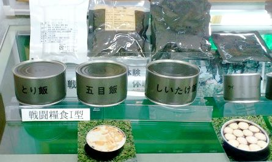 上記は、目達原駐屯地広報資料館にて撮影。
画像の中央が「カンメシ」で、上部は「パックメシ」。
画像のものは、文字通り「非常食」となる。
自衛隊員の通常業務においては喫食することはない。
有事の際、もしくは演習や、訓練等の移動の関係で給食が出来ない場合においてのみ、支給される。
カンメシの主食缶は、赤飯、とり飯、しいたけ飯、五目飯などが存在する。二合ほどの量があって、カロリーは千キロほど。
おかず缶は、牛肉味付け(しょうゆ味)、コンビーフ、鶏肉野菜煮、牛肉野菜煮、まぐろ味付け、ウインナーソーセージ等が存在する。
Ⅰ型の賞味期限は三年間で、業者から納入されてからの一年間は、各方面隊の補給処(九州では目達原)にて保管され、二年目は駐屯地業務隊補給科糧食班倉庫に備蓄食料として保存される。
三年目に各部隊へ、計画に基づき配分となる。つまりカンメシは常時三年分の備蓄がある、という意味になる。
毎年、陸上自衛隊は主食を一四〇万食、おかず缶を三〇〇万食調達している。備蓄を順次、放出することによって有事、もしくは災害派遣等に備えている訳である。
民生品の缶詰は、プルトップなどで簡単に開缶できるものが多いが、缶詰タイプの戦闘糧食Ⅰ型は、航空機から投下する際の衝撃に耐えられるよう、あえてプルトップを採用していない。ために開缶には缶切りが必要となる。
「カンメシ」は味の面ではレトルトの「パックメシ」に劣るものの、完全に切り替わっていないのは前述の理由がある。
カンメシ二十四個入りの一ケースにつき、四個ずつ、簡易缶切りが付属している。夜間の演習などでは缶切りが行き渡らない場合もあり、戦闘職種では、財布の中に自前の缶切りを忍ばせている隊員も少なくはない。
●陸海空の給食の違い
陸上自衛隊の食堂に勤務する隊員は交代制で、期間はおよそ三ヶ月となっている。海上、航空自衛隊は、調理を専門とするベテランの隊員が調理業務に携わっている。
なぜ、そのような違いがあるのか。陸上自衛隊は、訓練や災害派遣等で駐屯地を離れる場合、他力に頼らずに自らの能力の中で全て(衣食住)をまかなう。つまり自己完結型となっている。水さえ手に入る場所(補給路がある、という状況)であれば、世界中のどの場所でも組織を展開、及び維持できる能力を持つ。
野外で調理を担当するのは、糧食班で経験を積んだ隊員ということになる。
●自衛隊のごはんって美味しいの？
味は、駐屯地によって異なる。予算は地域によって若干の差があるらしい。
食事のできる時間は決まっていて、駐屯地によって、または季節によっても異なるが、朝は起床時間と同時で六時半～七時半である。
昼は十二時、夕方は十七時(目達原駐屯地は十七時半)からとなる。
配膳はセルフサービスで、列に並び、トレイをもち、箸とご飯をよそう器をとり、順番がきたらご飯を盛りつける。量は加減できる。そのあとは、汁物、メインのオカズ、副菜などを取り、席につく。完全な流れ作業となっている。
食べ終われば残飯は一つの皿にまとめて席を立ち、食堂の出口に向かう。残飯を捨て、食器を下げて外に出る。
ちなみに残飯は、駐屯地によって異なると思われるが、民間の業者が引き取り、家畜のエサとなる場合が多い。
●大食堂と幹部食堂
駐屯地の隊員食堂は二つある。曹士が利用する大食堂と、尉官以上の幹部自衛官が喫食する幹部食堂である。
当然ながらメニューは同一だが、幹部食堂のほうが喫食人員が少ないため、待ち時間は少ない。また盛りつけも綺麗になる傾向がある。
目達原の幹部食堂は、盛りつけ等も大差はない、とのこと。
ちなみに、駐屯地内の浴湯施設も曹士と幹部で分かれている。駐屯地によっては、陸曹専用の浴湯もある。
幹部浴場は狭いので、あえて曹士用に入浴する幹部自衛官もいる。
●駐屯地の中には、隊員食堂の他に食事の出来る場所がある
結婚して営外勤務(駐屯地の外から通うこと)または二等陸曹以上、及び尉官以上の幹部自衛官は営外居住となり、駐屯地の隊員食堂で喫食できなくなる。当直などの業務で駐屯地内に留まる必要があれば、営内者と同じように喫食できる。また、営外者でも申請をすれば隊員食堂での喫食が可能となる。その場合、食費が給与から天引きされる。
既婚者、及び幹部自衛官は、お弁当を持参する場合が多い。
隊員食堂のほかにも、厚生センター内には民間経営の食堂(有料)があり、弁当のない者はそこで喫食する。一般的な大衆食堂に近い。
他にも民間経営の喫茶店もあり、軽食を食べることが出来る。こちらも有料となっている。
●初日の昼ご飯
当日、約束の十一時半ぴったりに駐屯地の表門に到着した。広報班長の後藤一尉が出迎えてくれた。警衛所の近くにある広報資料館に案内され、そこで諸注意などの説明を受ける。三日分の食費も払った。
早速、隊員食堂に出向く。
私は歩きながら後藤一尉に「変な申し出を受けていただいてありがとうございます」と声をかけた。
「いえいえ。面白い試みだと思いますよ」
「隊員食堂でご飯を食べるのはそれほど難しいことではないと思いますが、それを本に書く、というのはイレギュラーでしょうね」
「ま、そうですね。うち(広報室)にも、たまに食堂でごはんを食べてみたい、という電話があったりするんですが、個人の場合ですとたいていはお断りします。廣川さんはＯＢなので特別に許可が出ました」
団体で、しかるべき方法で申請すれば、部隊見学の一環として駐屯地の内部に入るのも可能で、隊員食堂での喫食もできる。
もちろん、訓練等で駐屯地側の日程が合わないと実現はしない。ご興味のあるかたは、各地域の地方協力本部にお問い合わせください。食費はかかります。
隊員食堂に辿り着く。まだ十二時前とあって、隊員の姿はまばらだ。
なんとすでに私の食事が準備されていた。
しかも箸置きや、ナプキンまで用意されている。恐れ多い。本来ならば列に並んでトレイを持って......というように配膳はセルフサービスだ。
席について「いただきます」と両手を合わせ、箸を手に取る。
久方ぶりの自衛隊のごはん。感慨深い。
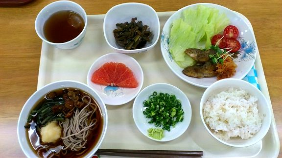 メニューは次の通り。
――――――――
・ご飯
・おろしそば
・豆あじの南蛮漬け
・レバニラ炒め
・グレープフルーツ一切れ
――――――――
総カロリーは８００ほど。
ランチとしては地味なほうだと思う。メニュー表を確認するが、他の日のランチのカロリーは１０００をほぼ越えている。
おろしそばは汁に浸っており、一種のぶっかけそばである。
南蛮漬けを口にする。甘酸っぱい。豆あじは油で揚げられており、頭から尻尾まで問題なく食べることが出来る。
南蛮漬けは、魚などの切り身に片栗粉をまぶし、油で揚げて、ネギや唐辛子と一緒に酢漬けにした料理となる。西洋料理でいうところのエスカベッシュ、長時間漬ければマリネとなる。
名前の由来だが、安土桃山時代、東南アジアを経由してやってくるポルトガル船やスペイン船を「南蛮」と呼んでおり、調理には南蛮渡来の香辛料などを用いることから「南蛮漬け」と呼称されるようになったらしい。
他の説としては、難波という地域の特産品がネギで、そのネギを使った料理を「なんばに」「なんばうどん」などと称しており、呼び名がなまって伝わり「南蛮」となった説などもある。
料理の世界は奥が深い。
続いて小鉢に目を向けた。おひたしかと思ったが、レバニラ炒めだった。
牛や豚、もしくは鶏のレバーを血抜きして、ニラと一緒に炒め、味付けは塩胡椒や醤油などで調えるのが一般的。
実際に食したレバニラ炒めは「炒め」というよりも煮物に近いと感じた。大量調理だと仕方のない部分だろうか。味は塩気が強く、甘酸っぱい南蛮漬けとの取り合わせはバランスが良い。
レバーは独自の食感があって、苦手な人も多い。私は、取り立てて好物、というほどではないが嫌いではない。
栄養学の観点からいうと、ビタミンＡや鉄分を豊富に含んでおり、かなりの優等生。
本来は「ニラレバ」というらしい。『天才バカボン』の影響で「レバニラ」の呼称が広まった、との説がある。本場である中国でも「ニラレバ」というようだ。
全体的に量が多くて、そばは半分ほど残してしまった。
「ごちそうさまでした」と両手を合わせ喫食終了。
後藤一尉と一緒に席を立ち、出口に向かう。片付けは配膳と同様にセルフサービスとなっている。
午後からは広報資料館にて、目達原駐屯地の沿革や歴史について後藤一尉から説明を受けた。
それが済むと資料館の館長である古賀一曹から、館内にある展示物を色々と見せていただいた。
かつて目達原は、大刀洗陸軍飛行学校目達原分校があり、陸軍の特攻隊の中継基地として使用された経緯がある。〈子犬を抱いた少年兵〉で有名な荒木幸雄氏の写真も飾ってあった。
詳細について本書の後半部分に収録した『目達原駐屯地取材体験記』をご覧になっていただきたい。
●初日の夕ご飯
十七時。夕食を食べるため広報班長の後藤一尉と共に隊員食堂へと赴く。
本来、夕飯は十七時半からである。しかし十七時半からだと隊員食堂が混雑するので特別に時間を早めてもらった。
昼と同じように食事の準備がされていた。申し訳なかったので、糧食班長の日向二尉に「有り難いのですが、明日からは自分でやります」と声を掛けた。
メニューは次の通り。
――――――――
・ご飯
・白身魚のピザ風焼き
・キャロットスープ
・ポパイサラダ
・牛乳
――――――――
総カロリーは１３００ほど。昼間が質素だった分、豪華なのだろう。
「いただきます」と両手を合わせて、箸をとる。
主菜である白身魚のピザ風焼きは「焼き」とあるが、フリッターだった。切り身に小麦粉をまぶして油で揚げたのだろう。ソテーだと大量に作るのは難しいからフライにしているのだと思う。
上には、タマネギ、ピーマン、チーズ(多め)、ピザソースなどがかかっている。軽く焼き目が付いている。「焼き」の由来に違いない。
付け合わせは、パセリのみじん切りが混ぜ込んであるキャベツの千切りと、櫛形トマト。
白身魚は若干薄味だったので、卓上のソースを垂らす。味に締まりがでて旨味が増した。
キャロットスープは好き嫌いが分かれそうだが、ニンジン特有の臭みはそれほど感じなかった。バターの風味が強い。
ポパイサラダは、サラダほうれん草が主体で、ベーコンとカットコーンがアクセント程度に散らしてある。
牛乳は二〇〇ミリリットルの正方形のパックタイプ。牛乳のほかに、豆乳、ラクトコーヒーなどから選べる。
カロリーが高い割には、量は少ないと感じた。チーズのせいだろうか。
「ごちそうさまです」と両手を合わせる。完食。
順序が逆になってしまうが、この日の朝食の紹介もしたい。諸事情があり朝食は食べていないので、メニュー表から引用させていただく。
月曜と水曜は、米かパンが選べる。そのほか、当直や訓練などで隊員食堂に足を運ぶことのできない隊員用に、菓子パンセット(菓子パン二個と牛乳など)が用意されている。菓子パンセットは、全国共通のはずである。
初日の朝ご飯は以下の通り。
――――――――
・ごはん
・味噌汁
もしくは、
・モーニングパン
・カップスープ
以下は共通メニューとなる。
・あぶり焼きチキン
・チリコンカン
・ジュースバイキング
・納豆と味付け海苔
――――――――
自らの経験を振り返ると、朝食は、ご飯と味噌汁、そしてサラダ程度だったと記憶している。
なので目達原駐屯地の朝食は品目が多く豪華だな、との印象をもった。
●二日目の昼ご飯
十一時半。警衛所にて後藤一尉と落ち合って早速、隊員食堂へと向かう。
その前に、この日の朝食を紹介したい。例によってメニューから抜粋させていただく。
二日目の朝食は以下の通り。
パン食はなく、ご飯のみ。
――――――――
・ご飯
・ししゃも
・大根炒め
・味噌汁
・海藻サラダ
・納豆と鮭茶漬け
・牛乳
――――――――
総カロリーは九〇〇近い。
やはり豪華、という印象だ。品目も多い。恐らく、一つ一つの量自体は少ないのだろう。
話を昼食に戻す。
毎週火曜日の昼ご飯は、主菜がＡとＢに分かれており、Ａ食(豚しゃぶ)はカロリー控えめ。Ｂ食(豚肉ステーキ)はカロリー多めとなっている。
個人的にはＡ食に興味があったが、ステーキのほうが見た目的には映えると考え、Ｂ食とした。
トレイを持ち、箸や茶碗を取り、配膳台へと進んでいく。主菜のＢ食(豚肉ステーキ)を選んで、器に汁を注ぎ、ご飯をよそう。
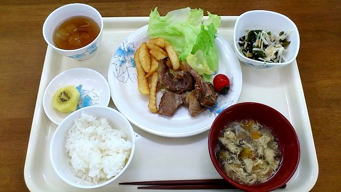 メニューは次の通り。
――――――――
・ご飯
・豚肉ステーキ
・卵とじスープ
・かりかりじゃこサラダ
・ゴールドキウイ
――――――――
総カロリーはおよそ１２００ほど。
主菜の豚肉ステーキは、あらかじめ切ってから焼いてあるために、ステーキという感じはしない。一枚で出すとナイフとフォークが必要になるためだろう。
肉質は残念ながら固かった。焼き上げてから保温機などに入れて保管していたせいに違いない。これは大量喫食の残念なところでもある。
付け合わせはレタス、ミニトマト、フライドポテト。
副菜の小鉢は酢の物かと思ったが、メニューを確認するとサラダとなっている。わかめ、大根、じゃこなどが和風ドレッシングで和えられている。酢の物でも通用する味付けといえよう。
目をひいたのはデザートのキウイで、実が黄色い。ゴールドキウイというらしい。パッと見た目はバナナに見えなくもなかった。
キウイはマタタビ科の果実で、その幼木や若葉はネコ害を受けることもある。さすがにネコも実は食べないだろう。
キウイの名前の由来は、外観が茶色い毛状の繊維に覆われていて、鳥のキーウィに似ているから、ということらしい。
ゴールドキウイの産地はニュージーランドで、普通のものよりも酸味が弱く、甘みが強い。
初日と同じく、全体的に薄味だった。卓上調味料で各自味は調えてください、ということだろう。
薄味の点は除いて、昨日の昼ご飯と比べるとガッツリ系で、満足度は高い。
「ごちそうさまです」と手を合わせ、後藤一尉と共に席を立つ。
午後は厚生施設の見学、及び喫茶部の取材をする予定となっている。
建物は厚生センターと呼ばれ、コンビニ、スポーツ用品店、本・文具屋、喫茶部〈Ｃａｆｅ Ｃａｍｐ Ｍｅｔａｂａｌ〉、有料の食堂、共済組合事務所、図書室、談話室などがある。
十二時から十三時の間は、昼休み中の隊員たちで賑わう。
昼休みが終わり、課業開始となった。
後藤一尉が喫茶部のオーナーに話を付けてくれた。間の悪いことに、喫茶部のオーナーは設備関係の業者のかたと商談中で、話を聞くのはすぐには無理、との返事だった。仕方なく、厚生センターの談話室で商談が終わるのを待つことにした。
後藤一尉と雑談しているうちに商談も終わり、喫茶部のオーナーがやってきた。名刺を交換してご挨拶。杉山様。まだお若いかたである。
詳しくは〈四章 目達原駐屯地の喫茶部「Ｃａｆｅ Ｃａｍｐ Ｍｅｔａｂａｒｕ」〉をご覧ください。
●二日目の夕ご飯
十七時となり、隊員食堂に向かう。
二日目の夕飯メニューは次の通り。
――――――――
・ご飯
・サンマの塩焼き
・団子汁
・五目煮豆
――――――――
総カロリーはおよそ１０００ほど。
和食テイストといえるだろう。
昼が豚肉だったので、焼き魚は嬉しい。
塩焼きとは魚を塩漬けにしたあとに、表面の塩分を洗い流し、それから塩を振って焼いたもののことをいう。単に魚の身に塩を振って焼いたものは白塩焼きというらしい。
焼き魚をきれいに食べる人は、魚が好きか、もしくは港の近くで育ったに違いない。
かつて私は大型自動車免許の取得のために小郡駐屯地で四ヶ月ほど生活した経験がある。そのとき、長崎出身の隊員だったと記憶しているが、その彼の焼き魚の食べ方が独特だった。
サンマを皿の上に立たせ(尻尾を下にするのではなく、腹を下にする)、箸を背中の上部に差し込み、すっと尻尾のほうに向かって滑らせる。
するときれいに身が骨から剥がれる。食べ終わったあとの彼の皿は、サンマの頭と骨と尻尾だけが残されていた。
付け合わせは、大根おろしとレモンスライス。
焼き魚に大根おろしの組み合わせは一般的だが、実は意味がある。魚に多く含まれる鉄分は「ヘム鉄」と呼ばれ、貧血に効果があるが、大根のビタミンＣと一緒に摂取すると吸収率が大幅にアップする。
団子汁の具は練り団子のほか、ゴボウやニンジンで、味はみそ風味。大分の郷土料理であり、本来、団子は麺状のものを用いるらしい。
五目煮豆は、大豆以外にもニンジンやこんにゃくが入っており、甘辛い味付け。
完食。
こうして二日目が終わった。歩いて、宿泊しているビジネスホテルに戻る。明日は最終日である。
●三日目の昼ご飯
警衛所で後藤一尉と待ち合わせ、共に隊員食堂へと足を運ぶ。
その前にこの日の朝食を紹介させていただく。
三日目の朝食は以下の通り。
――――――――
・ごはん
・味噌汁
もしくは、
・モーニングパン
・カップスープ
以下は共通メニューとなる。
・肉団子(ミートボール)
・スパゲティサラダ
・イチゴフルーチェ
・納豆と味付け昆布
――――――――
総カロリーは米食は八〇〇弱、パン食だと七〇〇ほど。
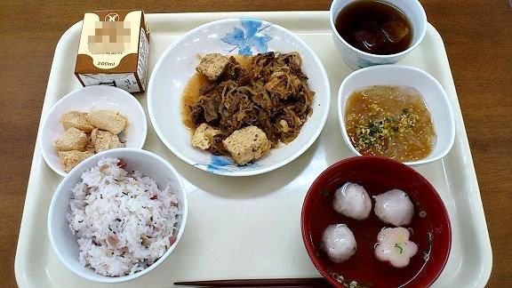
話を昼食に戻す。
本日の昼ご飯のメニューは次のとおり。
――――――――
・梅じゃこご飯(もしくはちらし寿司)
・肉豆腐
・いか団子汁
・ところてん
・わらび餅
・コーヒー牛乳(もしくは牛乳)
――――――――
総カロリーは１２００ほど。
コーヒー牛乳については製造メーカーの画像使用許可が下りなかったのでモザイク処理を施した。
主菜である肉豆腐は、盛りつけが雑ではあるが、味はとても良かった。計六食の食事の中で、一二を争う美味しさ。
味付けはスキヤキ風で薄からず濃からずちょうど良い。これがスキヤキになると、白菜やネギなどの水分が加味されて、味が薄まってしまう。大量調理の宿命といえる。
肉豆腐の具は、木綿豆腐、牛肉、白滝。
大量喫食のために盛りつけがアバウトになるのは仕方のない部分だと思う。自分自身で盛り直せばいいのだが、ただでさえ写真を撮る、という行程を挟んでいるせいもあり、同行していただいた後藤一尉をお待たせするのは忍びなかった。なので盛りつけについては、配膳されたままである。あくまで実際の現場を紹介したい、という趣旨のため、脚色はしていない点をご了解願いたい。
副菜のところてんは、酢醤油ベースのタレがかけてある。
消化されないので栄養価はゼロに等しいが、食物繊維としての整腸効果はある。
江戸時代には庶民の間食だったらしい。砂糖や醤油をかけて食べたという。
お吸い物の具は、イカの練り物とかまぼこで、いつものごとく味は薄め。個人的にスープ系は薄味が好みなので美味しいと感じた。
わらび餅については、特筆すべき点はない。もちろん美味しかった。
平安時代に在位された醍醐天皇の好物だったらしい。
飲み物はこの前は牛乳だったので今回はあえてコーヒー牛乳を選んだ。
コーヒー牛乳は持ち帰ることにして残りは完食。
「ごちそうさまでした」と手を合わせ、後藤一尉と共に隊員食堂をあとにする。
売店で後藤一尉と別れ、談話室のソファに座ってコーヒー牛乳をちびちびと飲んだ。
午後からは、糧食班におもむいて、栄養士、糧食班長のかたにお話を聞かせていただいた。
詳しくは〈五章 糧食班長と専属栄養士に聞く〉をご覧ください。
●三日目の夕ご飯
十七時となり、隊員食堂に赴く。最後の食事となる。
メニューは次の通り。
――――――――
・ご飯
・皿ちゃんぽん
・生野菜バイキング
・フルーツ白玉
――――――――
総カロリーは１１００ほど。
皿ちゃんぽんは、茹でた生麺に餡がかかっている料理で、実は生まれて初めて食べた。こんな料理がある、ということさえ知らなかった。
中華風の味付けで、とろみがついており、太麺と良く絡まって美味。半分ほど食べたあとに卓上のソースを掛けた。味が変わって二度楽しめる。
生野菜バイキングは、レタス、グリーンカール、トレビスとキャベツの千切りなど。
ドレッシングは、使い切りタイプの小パックが配膳台の近くにまとめておいてある。
夕食にしては少々物足りないかな、という印象だった。
食事が終了した。
「ごちそうさまでした」と両手を合わせ、トイレを持ち、席を立つ。
こうして三日間にわたる喫食体験が終了した。
献立表のコピーをいただいたので、幾つか面白そうな献立を紹介して、この章を終わりにしたいと思う。
ある木曜日の朝食。
――――――――
・ご飯
・きんぴら
・塩鯖焼き
・味噌汁
・温泉卵
・納豆とノリの佃煮
・牛乳
――――――――
総カロリーは七〇〇ほど。
これぞ日本の朝食、といえよう。
ある月曜日のお昼ご飯。
――――――――
・鎌倉丼
・ポテトサラダ
・清汁
・アロエヨーグルト
・ジュースバイキング
――――――――
総カロリーは一四〇〇ほど。
鎌倉丼は、エビフライ(もしくはエビ天)をだし汁で煮て卵でとじた丼物。神奈川県鎌倉市のご当地料理。
こちらは水曜日のお昼ご飯。
――――――――
・タコライス
・スパゲティサラダ
・わかめスープ
・フルーチェ
――――――――
総カロリーはおよそ一三〇〇。
品目は少ないが、タコライスの挽肉とチーズが高カロリーなのだろう。
タコライスは、タコスの具に使われる挽肉、チーズやレタス、トマトをライスの上にのせた沖縄料理となる。蛸が入っているわけではない。
こちらは木曜日の朝食。献立は朝カレー。
――――――――
・ご飯
・朝カレー
・シーザーサラダ
・甘夏缶盛り合わせ
・牛乳
・納豆
・福神漬
・楽京漬
――――――――
総カロリーは六〇〇強。
思ったほどカロリーは高くない。
カレーに納豆の組み合わせは如何に......。案外と合うかもれしない。
こちらも木曜日のお昼ご飯。カレーの日となる。
――――――――
・ご飯
・ポークカレー
・シーザーサラダ
・マンゴー杏仁
・牛乳
・福神漬
・楽京漬
――――――――
総カロリーは一二〇〇ほど。
スタンダードという印象の献立だ。こういう食事こそが美味しい。
こちらも木曜日のお昼ご飯。同じくカレーの日。
――――――――
・ご飯
・ナスのカレー
・大根サラダ
・パフェ
・クールドリンクバイキング
・福神漬
・楽京漬
――――――――
総カロリーは一六〇〇ほど。ナスはヘルシーというイメージだが、ポークカレーとカロリーは大きな違いはない。高カロリーなのはパフェのせいだろう。
次は、三ヶ月間のメニューの中で、最も高カロリーな食事を紹介したい。
金曜日のお昼ご飯。
――――――――
・ご飯
・ホルモンうどん
・ポテトコロッケ
・桃とパインの盛り合わせ
・牛乳
――――――――
なんと総カロリーは一七〇〇を越えている。
金曜日の昼という点が、なかなか思わせぶりといえよう。
こちらは最も低カロリーな食事となる。
月曜日のお昼ご飯。
――――――――
・ご飯
・鶏肉照り煮
・竹輪いため
・ところ天
・味噌汁
・ずんだ餅
――――――――
総カロリーは六〇〇に届かない程度。
休み明けのお昼ということで、出来るだけ質素なメニューなのかもしれない。
陸上自衛隊の駐屯地の中には、たいてい有料の喫茶店が存在する。出店については、駐屯地業務隊から地元の商工会議所などを通じて民間に募集がかけられるようだ。
目達原駐屯地の喫茶部は「Ｃａｆｅ Ｃａｍｐ Ｍｅｔａｂａｒｕ」という名称で、オープンして三年目を迎えるとのこと。
まずは喫茶店のメニュー表を見せていただいた。
・日替わりランチ 五〇〇円
内容は、ごはん(一八〇グラム)、本日のおかず、サラダ、スープ。
続いて看板メニューは〈ご当地Ｂ級グルメ〉
・シシリアンライス(佐賀市) 六六〇円
ごはんの上に焼き肉とたっぷりの野菜がのった料理。
・どんぶりア(長崎) 六五〇円
親子丼にチーズをのせてオーブンで焼き上げた料理。
・焼きカレー(北九州・門司) 六六〇円
カレーの中にたまご、上にはチーズをのせて焼き上げた料理。
・肉玉ライス(広島・呉) 七〇〇円
ふりかけごはんに豚肉と目玉焼き、ソースをかけたお好み焼き丼ふう。
メニュー表の裏面は、定番料理が並ぶ。
・ビーフカレー 五五〇円
トッピングでチーズ、目玉焼き、コロッケ、唐揚げ、焼き肉、ハンバーグ、トンカツ、などが選べる。計六六〇円～七二〇円。
丼物は以下の通り。
・親子丼 六三〇円
・から揚げ丼 六六〇円
・豚マヨ丼、焼き肉丼、メンチカツ丼 各六八〇円
・カツ丼 八〇〇円
他にミートソース、カルボナーラなどのパスタ類。共に六三〇円で、ナポリタンが六五〇円。
食事には全てサラダとスープがつく。
ごはんは大盛り(二七〇グラム)は無料で、特盛り(三六〇グラム)は二〇〇円プラス。
ドリンク類は、コーヒーや紅茶など一般的な喫茶店と同様である。ホット、コールドが選べ、各三〇〇円。食事とセットで半額となる。
ピラフなどの定番メニューが主体だろうと思っていたので、ご当地グルメを推しているのは意外だった。
以下はインタビュー形式で収録させていただく。
「喫茶店の人気メニューを教えてください」
――日替わりは別とすれば、ご当地メニューのシシリアンライスですね。ご飯の上に焼き肉、更にたっぷりと野菜がのって、マヨネーズが網状にかかった、佐賀のご当地グルメです。
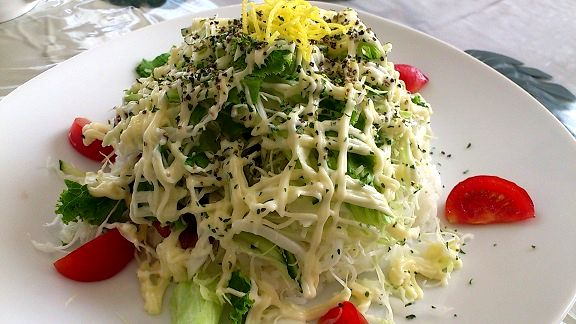
シシリアンライスにはカップスープが付く。
――もう一つ良く注文が入るのが、どんぶりアという、見た目はドリアなんですが、中身は親子丼という長崎のご当地グルメです。この二つが圧倒的に出ます。
どんぶりアは、ご家庭でも簡単に作れますよ！ レトルトの親子丼を買ってきて、溶けるチーズをかけて、ブラックペッパーを振って、オーブンで焼けば完成です。
ちょっと味はどうなのよ、という感じですけど、これが美味しいんです！ 是非試してください！
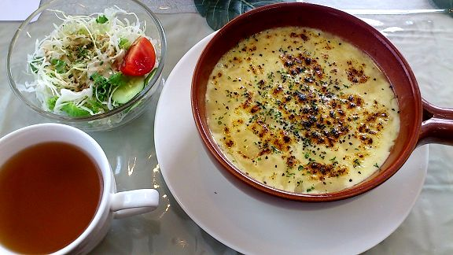
どんぶりアはサラダとスープ付き。
「見た目はドリアなのに中身が親子丼ですか。面白い料理ですね。分かりました。今度作ってみます。ご当地メニューの注文が多い、というのは意外に感じました。定番料理の人気が高いのではと思っていましたが......」
――定番メニューも一応は揃えているんですが、目達原駐屯地は場所的に九州の各県からいらっしゃる隊員のかたが多いので、そういう人たちから〈こういう料理があるんだよー〉という感じでアイデアをいただいて、メニューに反映しています。
「なるほど。隊員のかたの意見を取り入れる、というのはとても良いと思います。えっと、私はピラフが好きなんですけど、ピラフは置いてないんですか？」
――以前はメニューにのせていましたが、ご当地メニューをお出しするようになって目立たなくなってメニューからは外しました。裏メニューという形で、お客様のご要望があればつくることも出来ます！
「ちょっと聞きづらいことではあるんですが、収益のほうはどうなんでしょうか？」
――おかげさまで！
隊員の皆さんに喜んでいただいて、しかも収益も上がるということで、理想の形だと考えています。
ここで一つ、私はオーナーの杉山さんに質問をされてしまった。
「開業して三年ほど経つのですが、うちの喫茶部はほかの駐屯地と比べてどうですか？」
――私(廣川)もそんなに各駐屯地を知ってる、という訳ではありませんので確かなことはいえませんが......。
目達原駐屯地の喫茶店は店内が明るい感じですね。
ほかの駐屯地の喫茶店は、なんというか、照明や間取りの関係もあるかも知れませんが、ちょっと暗い感じというか......もちろん場所にもよるとは思うんですが。
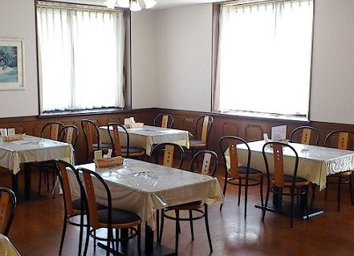
店内の様子。
シシリアンライスは美味しそうだったので購入することにして、持ち帰りパックに詰めてもらった。
夜食として食べたが、焼き肉のタレとマヨネーズの味が濃厚で、ご飯は大盛りにしたほうがちょうど良いかもしれないと感じた。作られて時間が経っていて、野菜のみずみずしさが失われていたのも関係しているのかも。
シシリアンライスは簡単に作れるので、佐賀では家庭料理としても人気があるそうだ。
考案者は、福岡市でイタリア料理店のオーナーをしている田中和夫氏とされている。
一九七四年頃、田中氏が佐賀市内の料理店で働いていたときのまかない料理が発祥らしい。
当時はあり合わせのもので作っていたが、従業員に好評を博し、見た目を工夫して市販メニューに加えた、とのこと。
トマトの赤と、ゆで卵の白、キュウリやレタスの緑が、イタリア国旗、トリコローレをイメージし、地中海のシチリア(シシリー)にちなんで「シシリアンライス」と名付けた、とされる。
佐賀市内のレストラン、喫茶店など二〇店以上で販売が行われていて、店舗ごとにアレンジが加えられているそうだ。
ちなみにどんぶりアは後藤一尉が購入した。
取材を終えて家に買えるとちょうどレトルトの親子丼とチーズがあったので即席で作ってみた。
一口食べてみて......これは！ と衝撃を受けた。美味い。最初はチーズの濃厚な味が口の中に広がるが、それに親子丼の甘辛さが加わって、何とも経験した覚えのない味わいとなる。
しかし半分も平らげると胃に応えた。確かに美味しいが、毎日食べると飽きるだろう。時々なら確実に美味しい。
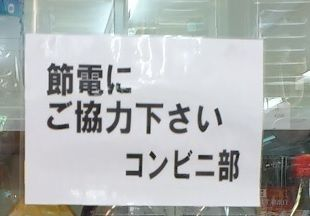
喫茶部の入っている厚生センター内には、コンビニもある。
かつては直営売店という形で運営されていたが、現在は民間委託となっている。直営売店の頃は土日は休みだったが、現在は年中無休とのこと。羨ましい。
ただ、値段は割高(普通のコンビニ並)との印象をもった。直営のころは一～二割程度は安価だったはずである。
扱っている商品はお弁当やサンドイッチ、パン類、ジュースや酒類、お菓子やカップ麺、文房具などから、自衛隊ならではの品物もある。
演習場の地図(一般の人は購入不可)、迷彩用のドーランから、官品(支給品)に似せた被服など。
階級章、及び教範などの販売も行っている。こちらも一般の人の購入は不可。
お土産も購入できる。自衛隊限定のレトルトのハヤシライスや、ラー油風味 誉(ほまれ)みそなどが販売されている。
ラー油風味 誉(ほまれ)みそをお土産として買うべきか迷い、最終日に決めればいいか、と考えていたら、結局のところ売店に寄る暇がなかったので買えずじまいだった。
教訓。お土産は買える時に買うべし。
厚生センターには隊員食堂とは別に、営外勤務者用の有料食堂もある。当初、こちらにも取材をさせていただこうと考えていたが、学食や社食と同じようなメニューで、自衛隊色は薄いこともあって今回は見送った。
陸上自衛隊の隊員食堂には、専属の栄養士がいる。
目達原駐屯地は伊勢技官というかただが、私が取材に訪れたときは産休のために不在で、代わりに別のかたが対応してくれた。山城技官という女性である。
私はあらかじめ広報室を通じて、糧食班の栄養士、及び料理長にお話を聞きたい、と要望していたが、実際にお話を聞かせていただいたのは山城技官と、糧食班長の日向二尉だった。
糧食班長は実際の調理には関わっておらず、総括的な立場だろうと考えていたが、私が初日に隊員食堂に赴いた際、日向二尉は調理服姿だった。
通常、糧食班は駐屯地業務隊の下に置かれる組織となるはずだが、目達原駐屯地は業務隊が存在せず、同駐屯地の糧食班は、九州補給処総務部管理課の下にあり、ひょっとするとそこら辺が関係しているのかもしれない。
あとで聞いた話によると、糧食班長は駐屯地給食業務の現場長として食堂内において直接隊員のニーズを把握したり喫食マナーを指導するため、配食服を着用し、現場にいた、そうである。
目達原駐屯地の厨房は、臨時勤務、勤務場所指定で各部隊から人員を徴集しているのではなく、調理専門の隊員がいる、とのこと。このような体制は陸自では珍しい。業務隊が存在しない点と合わせて、意外に思った部分である。
以下はインタビュー形式で収録させていただく。
「早速ですが、目達原駐屯地の人気メニューを教えてください」
山城技官「どこも一緒だと思うのですが、人気メニューはやはりカレーということになりますね。目達原駐屯地は木曜日がカレーの日でして、毎週いろんなカレーを食べていただいています。今週の木曜日は朝カレーです」
なんと、喫茶部の通常メニューの一番人気もカレーだった。自衛官はカレーが好きである。といっても自衛隊員も日本人であるから、カレーが嫌い、という日本人はそうは多くはないだろう。レトルトが合わない、という人なら珍しくはないかもしれない。
「朝カレーというのは珍しいですね」
山城技官「イチロー選手の真似です(笑) 隊員から要望がありまして本年度から実施しています。けどさすがに朝からカレーは......という別の隊員の声もありまして、以前は月に一度でしたが、現在は三ヶ月に一度に頻度を落として様子見という状況です。隊員のアンケートの結果によってはやめるかもしれません」
「カレーを作るのは時間がかかるかと思いますが、朝カレーは前日の夜に作っておくのでしょうか？」
日向二尉「いえ、当日の朝から作ります。材料を細かく裁断するなどの工夫をしていますので、時間はそれほどかかりません。当日は熱を加えて味付けをするだけですね」
「なるほど。だったら手早く出来そうですね。――献立を考える上で、気をつけていることがあれば教えてください」
山城技官「やはり限られた予算や、大量喫食という制限はありますが、その制限の中で可能な限り美味しいものを食べていただきたいと考えてメニューは作成しています。あと、レベル別給食ということで、火曜日の昼は主菜がＡとＢに分かれています。Ａが女性自衛官や、事務担当、もしくは成人病の気になる隊員用でカロリー抑えめです。Ｂは通常メニューとなります」
日向二尉「自衛隊は一般とは違って少し特殊ですから、急な任務が入ったりすると、突然喫食人員が増える事態もありますので、その対応ですね。災害派遣等で部隊が集結すると、通常の倍の食事を準備しなければならないこともあります」
「その点は自衛隊の組織上、避けられない問題ですよね。ところで、各駐屯地には専属の栄養士さんが一人いると思うのですが、横の繋がりなどはあるのでしょうか？」
山城技官「西方栄養士会という組織がありまして、横の繋がりはあります。ちなみに陸自のみの繋がりです」
「飯塚では、ランチの時に、民間のお寿司屋さんをお呼びして、にぎり寿司を出したことがありました。目達原駐屯地でもそのような催しをしたりするのでしょうか？」
日向二尉「かつてはそのような民間の業者さんが各駐屯地を回っていたようですね。今はそのような民間の業者さんの手を借りて、ということはありません」
山城技官「ちなみに目達原駐屯地でもにぎり寿司をだしたことはあります。喫食人員が多いのでシャリを一つずつ握るのはさすがに出来ないので、業務用の機械を使っていました。去年、残念ながらその機械が壊れまして、現在はにぎり寿司はメニューから外しています」
「アレルギー体質のある隊員のかたには、特別なメニューを出す、ということもあるのでしょうか？」
日向二尉「現在のところ、目達原駐屯地では、医療関係からアレルギー体質と指定、食事制限された隊員はおりません。もしアレルギー食が必要になった場合は、その都度、対応する、ということになります」
「残飯が大量に出るのは仕方のない点かと思います。飯塚駐屯地では、残飯は民間の業者が引き取って家畜のエサとしていましたが、目達原駐屯地でも同じでしょうか？」
日向二尉「はい。目達原でも飯塚と同じように残飯は業者さんが引き取って家畜用のエサになっています。残飯といえども捨てるのはもったいないからですね」
「有効活用はされている、ということですね。よく分かりました。それでは本日はお昼休み中のところお時間をつくっていただきありがとうございました。大変参考になりました」
インタビュー終了。
そのあと、日向二尉に同行していただいて、隊員食堂を見学した。
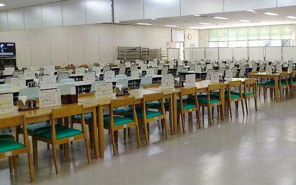
全体の様子。
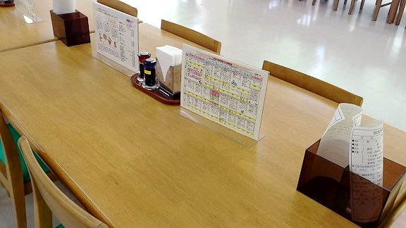
卓上にはソースと醤油、ナプキンが常備されている。
厨房の中は、私が検便検査を受けていないために立ち入ることが出来なかった。
続いて併設されている幹部食堂へと向かう。
目達原駐屯地は航空部隊が所在しているため、幹部自衛官の数が多い。操縦資格を得ることの出来るのは幹部自衛官以上のため。
従って、幹部食堂も広いと感じた。
奥に衝立があり、二〇名ほどが喫食できるスペースがある。
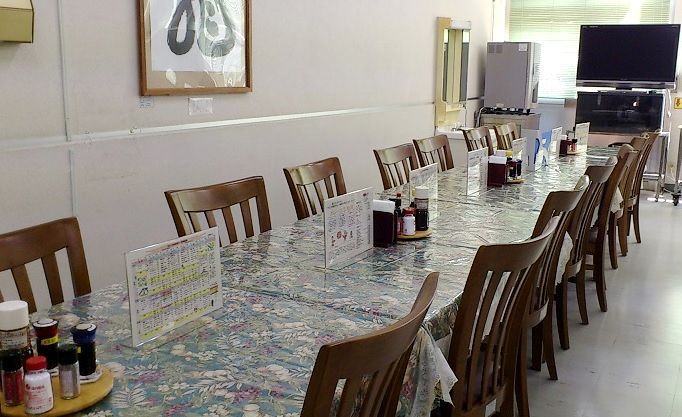
「ここは最上級者が喫食するところですよね？」
「そうですね。駐屯地司令や、部隊長たちの喫食する場所です」
私がせっせと写真を撮っていると、背後で後藤一尉と日向二尉のやりとりが聞こえた。
「ここで日ごとによからぬことが話し合われているわけですね......」
後藤一尉の声に思えたが、ひょっとすると私の心の声かもしれない。
(断じて糧食班長の日向二尉は関係ありません)
ちなみに後藤一尉も日向二尉も幹部自衛官なので、幹部食堂で喫食する資格をもつ。
後藤一尉は営外勤務のために普段はお弁当を持参しているらしい。
愛妻弁当だろうか。
隊員食堂と、内装や調度品の違いは別として、差異があるとすれば、卓上の調味料だろう。
醤油、ソース、塩とこしょう、タバスコ、トンカツソース、ポン酢まである。
隊員食堂にもこれらの調味料はあるのだが、卓上ではなく、配膳台の近くにまとめられている。
目達原駐屯地司令は、川﨑朗陸将補である。
私の変なお願いに最終的に許可をくださったかたであり、決して足を向けては寝られない存在である。
この場を借りてお礼を述べさせていただきます。駐屯地の隊員食堂でご飯を食べさせて欲しい、という私の突飛ともいえるお願いに許可をいただきましてありがとうございます。服務中異常なし！ であります。
川﨑朗陸将補は宮崎県えびの市出身で、防衛大学校第二四期。第四三普通科連隊長、第九師団副師団長、北方総監部幕僚副長などの要職を歴任したあと、平成二五年三月に目達原駐屯地の九州補給処長、兼駐屯地司令として着任された。
駐屯地司令。書いてしまえば簡単だが、ポスト数に限りがあり、誰しもが補職されるとは限らない。
私は陸士であったから、駐屯地司令の世界は垣間見た経験もないが、話にきくと、ほんの些細な独り言でも組織全体が動く事態もあり得るようだ。
駐屯地司令ほどの重要ポストでも、昼食は幹部食堂に足を運ぶそうである。隊員食堂では隊員は入口で立ち止まったりすることはないが、幹部食堂の場合、隊員は入口で姿勢を正し、最上級者の席に向かって敬礼を行う。
会食などがある場合は、庶務室の隊員が食事の準備をして会食場まで運ぶ、とのこと。
総括。陸上自衛隊の隊員食堂の食事は、あくまで質実であり、名を捨てて実を取った、という印象が強かった。
味については、薄味が多い、との感想をもった。味の濃い料理よりも薄味のほうが調整しやすい、ということだろう。各種の調味料が充実しているので、自分好みの味に変えるのも難しくはない。
健康を考えると、何も手を加えないほうがいいだろう。
薄味の料理が多いのは、隊員の全てが激しい訓練を行っているわけではなく、デスクワークの隊員もいるので、そういった点も考慮されているからだと思う。
あとは品目が多い、という点。
主菜から副菜、汁物に、デザート。日によっては、ジュースやヨーグルトなども付属する。
また一汁三菜を基本とはしているが、丼物や麺料理なども適宜給食され、飽きのこないメニュー構成になっていると感じた。
限られた予算の中で必要なカロリー計算を施し、なおかつバリエーションに富んだ献立を考案するのは決して簡単ではない。専属栄養士と経験豊かな糧食班長、料理長、それから調理に携わる隊員の尽力による賜物だろう。
『ほんとうの自衛隊のごはん』おわり
私は平成二十五年一月末『自衛隊のごはん』という電子書籍を出版した。
ミリタリーとグルメの組み合わせによって相乗効果が生まれたのか、発売早々に有料ランキングの百位以内に入ることが出来た。
一番良い時の売れ行きは、最大で一日四十冊程度、ランキングでは五十位ほどだった。
結果、ちらほらとカスタマーレビューが入るようになった。
そこそこの評価をいただける場合もあれば「タイトルと内容があってない」とのお叱りを受ける場合もあった。
内容は書き下ろしではなく、以前、自衛隊系のサイトを運営していた頃の記事が草稿となっており、作者本人が言うのは憚れるが、低品質であったのは事実である。主題は青春記であり、グルメ本の色合いは薄い。
言い訳になってしまうが、これほど売れるとは思っていなかった。発売から半年ほどで合計二千冊ほど売れたが、個人作家の電子書籍が半年間で二千冊売れた事例は、それほど多くはないはずだ。
タイトルも内容も、それほど注意は向けなかった......といってしまうとまたお叱りを受けるだろうが、いわば試し打ち的な側面があったのは否めない。
私は、決して読者を釣ろうとか、騙して本を買わせようという考えがあった訳ではない。しかし結果的には同じといえる。
低評価のレビューが入るに従って売れ行きは落ちていった。
そこで私は考えた。タイトルに合致した本を書いてみてはどうだろう。自衛隊に取材を申し込んで、隊員食堂でご飯を食べさせていただいて、その体験を本にすればいいのでは？
全く単純な考えに過ぎない。
私は、任期制陸士として２任期(４年間)自衛隊に勤務した経験があった。自らの経験を鑑みて、民間人が陸自の隊員食堂で食事をする、という行為は決して難しいものではない。駐屯地には時折、一般の見学者も訪れる。完全に閉鎖された世界ではない。それに、自衛隊の食事を電子書籍にして販売すれば、一般のかたに自衛隊の一面を知らしめることが出来る。これは自衛隊にとっても、プラスに働くのではないか。
五月末。私は防衛省のウエブサイト経由で「陸上自衛隊の駐屯地の食堂をテーマに本を書きたいので取材をさせて欲しい」という内容のメールを送信した。
返信は来なかった。私は別に落胆はしなかった。充分に予想できた事態といえる。一般人が陸自の食堂でご飯を食べるのはそれほど難しいことではないが、その体験を「本にしたい」と要望した者は、恐らく今までいないだろう。どう考えてもイレギュラーな行為なのだ。
私はいったん取材の件は忘れて、フィクションの執筆に取りかかった。それまで自衛隊関連の書籍を二冊出版しただけで、他に実績と呼べるものがなかったからである。作家と名乗る以上は、フィクションも何冊かは上梓する必要があるのでは、と考えた。
戦国時代をテーマにしたドタバタコメディを執筆し『戦国居酒屋☆秀吉』というタイトルで出版した。こちらはシリーズ化しており、今のところ三冊合計で二百冊ほど売れた。
七月の半ば、改めて陸上自衛隊に取材を申し込むことにした。
本当ならば自衛隊時代のつてを頼って話を持って行くのがスマートだとは思うが、現職の自衛官はＳＮＳの使用が制限(あとで確認したが、制限はされていないとのこと。しかしインターネットサービスを使用するには届け出が必要らしい)されているらしく、かつての同僚や上司の名前をインターネットで検索してもほとんど引っかからなかった。
自衛隊の窓口はどこだろうと考えると、地方協力本部に行き着いた。各都道府県に設置されている地方協力本部は、自衛隊の総合窓口といえる。自衛隊入隊者の確保や広報、及び自衛隊退職者の就職援護などが主な業務となっている。私も入隊前に何度かお邪魔した経験があった。
福岡の地方協力本部宛てに以下のようなメールを送信した。
＊＊＊
自衛隊福岡地方協力本部 担当者様
初めまして。
廣川ヒロトと申します。
元自衛官です。
私は自衛隊関係の書籍を、アマゾンより出版させていただいております。
著作の一部は好評をいただきまして二千部ほど売ることが出来ました。
このたび、自衛隊の普段の食事にスポットをあてた書籍を執筆したいと考えております。
つきましては、陸上自衛隊の駐屯地の隊員食堂、及び厨房に、取材をさせていただきたいと考え、メールをお送りしました。
期間は一週間前後と考えています。
私が住んでいるところは福岡県糟屋郡ですが、日本中、どこの駐屯地でも大丈夫です。旅費はもちろん当方が持ちますし、宿泊は駐屯地の近くのビジネスホテルを利用しようと思います。かかる費用に関しては、当方が全て負担します。
お手すきの時にでもお返事をいただけたらと思います。
失礼します。
＊＊＊
二日経ち、三日が過ぎ、一週間が経過しても返信は来なかった。
(メールでは駄目か......。直接足を運ぶしかないかな......)
と考えていたところ、返信が来た。以下のような内容である。
＊＊＊
廣川ヒロト様
連絡が遅れまして申し訳ありません。
近場で飯塚、福岡駐屯地を確認していますが、良い返事が来ていません。
つきましては、時期等を確認したいのでお電話頂ければありがたいです。
福岡地本 広報班長
＊＊＊
光明が見えた瞬間だった。
「良い返事が来ていません」との文言は気にはなったが、とりあえずコンタクトは取れたのである。これで話はとんとん拍子に進むかもしれない、と私は楽観した。しかしそれは文字通り楽観でしかなかった。
広報班長のかたは「電話してください」とのことだったが、直接足を運んだ。
福岡地方協力本部は、福岡県福岡市博多区竹丘町にある。
対応してくれた広報班長の田村さんは、とても気さくで話しやすかった。私がかくかくしかじかと説明すると、軽く頷いて「駐屯地の食堂でご飯を食べるのは可能だと思いますよ。けど、地本は、話を右から左に持って行くことしか出来ません。決めるのはあくまで駐屯地の担当者(広報関係？)ですので。それに、場所と時間をズバリ指定していただいたほうがこちらも話を持っていきやすいんですよね。近場では、福岡駐屯地になるんですが、ちょうど食堂が改装中でして、今年いっぱいかかる予定です。なので担当者が難色を示してまして......。《どこでもいいなら、うち(福岡駐屯地)じゃなくてもいいんでしょ？》という返答なんですよね。飯塚のほうは、七～八月は、地元の子どもたちのキャンプ支援なんかがあって多忙という理由で対応が難しいとのことです......」
私は広報班長の田村さんの勧めにしたがい、改めて場所は福岡駐屯地、時期は八月の初め、とお願いした。
田村さん「分かりました。もう一度、福岡駐屯地に掛け合ってみます」と約束してくれた。
私は「実現すると思いますか？」と感触を聞いてみた。すると田村さんはこう答えた。
「駐屯地の担当者の裁量一つで決まる話だと思います。担当者も色々ですから《それはちょっと......上に聞いてみないと......》と渋る人もいれば《ああ、面白そうだね》と気軽に応じてくれる人もいるんですよね。だからなんとも言えないですね」
私は時間をつくって話を聞いていただいたことにお礼を述べて地方協力本部をあとにした。
同日の夕方、私と同じセルフパブリッシング作家の忌川タツヤ氏に連絡をとった。福岡地本と忌川氏の家は近い。せっかくだから「夕飯でも食べましょう」と提案したのである。それまでにも忌川氏とは何度か会っており、友人と言うほど気心の知れた仲ではないが、知人というほど縁遠い人物ではない。
忌川氏は、セルフパブリッシング界では有名人で、私などより知名度は高い。
私は実は、今回の試みに、忌川氏を引き込もうと画策していた。その話は結局、断念することになるのだが......。詳しくは後述する。
忌川氏と一緒に焼き肉を食べ、そのあとカフェでコーヒーを飲みながら、色々と歓談した。その内容は今回とは関係ないので割愛する。
数日後、広報班長の田村さんからメールが届いた。
＊＊＊
廣川ヒロト様
個人的には、実現しそうだと思っていましたが、福岡駐屯地は対応は難しいとのことです。
駐屯地側からすると一週間は長いようです。
個人の部隊見学も例がないようです。
前回お話ししましたように地本からは「お願い」しかできませんので、直接他（福岡・飯塚以外）の駐屯地に問い合わせてみてはいかがでしょうか？
力になれなくてすみませんでした。
福岡地本 広報班長
＊＊＊
振り出しに戻った。
だが私は、取材は実現できる、と確信していた。陸上自衛隊は、全国で一三二の駐屯地、駐屯地よりも規模の小さい分屯地が二七、合わせて一五九の駐(分)屯地がある。それらの一つ一つに当たっていけば、必ず実現する、と考えた。
とはいっても、近場であるほうが何かと都合が良い。
私は佐賀の目達原駐屯地に目を向けた。駐屯地の広報室はウエブサイトをもっており、メールを送ることもできる。しかし今までの経験則によれば、メールでコンタクトをとるのは得策ではない。返事が来なければそこで終わりだ。かといっていきなり駐屯地の広報室に電話を掛けるのも気が引けた。ここはやはり窓口である地方協力本部に出向いてそこから話を持って行ってもらったほうが良いだろう。
佐賀の地方協力本部は、ＪＲ佐賀駅の近くにある。福岡からは、特急で四十分ほどの距離である。
私は八月の初め、佐賀駅へと足を運んだ。
地方協力本部の建物はすぐに見つかった。ドアをあけて、中に入る。受付はなく、机が並べられていて、制服姿やワイシャツ姿の厳つい面構えの自衛官たちが書類仕事をしていた。
ドアの閉まった音に気づいて、皆が一斉に私に注目する。
なんだこいつ？ という目つきである。明らかに歓迎はされていない。
「陸上自衛隊の駐屯地に取材をしたいのですが、広報担当のかたはいらっしゃいますか？」
近くにいたワイシャツ姿の男性(恐らく自衛官)が「取材？」とオウム返しに尋ねる。
「はい。取材です」
「えっと......」ワイシャツ姿の男性は私の姿をジロジロと見た。ちなみに私はスーツを着用していた。私服姿だと舐められると思ったからである。「えっと......。取材って、個人で？」明らかに不審げな顔つきだ。
「はい、個人で」
ワイシャツ姿の男性は困惑気味だった。すると、奥の椅子に座っていた制服姿の自衛官が立ち上がり、こちらに近づいてきた。入口近くの応接セットを示し「とりあえずお座りください」と名刺を差し出してきた。三等陸佐の、センター長のかただった。
こちらも名刺を渡し「一応、元自衛官です」と名乗った。
センター長の北原三佐はそれを聞くと顔をほころばせた。「ああ、そうですか。どちらの部隊に？」先ほどとは打って変わった、柔和な顔つきだ。
「飯塚の第二施設群です。前期教育は大分の別府でした」
「ああ、四十一連ですね」
「前期は一一一教育大隊でした。改変があって大隊は解散になったようですが......」と、こんな感じで会話は進んだ。
前期教育は、教育専門の部隊が基本だが、駐屯地の基幹部隊が臨時に教育隊を編成して任務にあたることもある。恐らく、後者のほうが一般的だろう。
私が「目達原駐屯地の食堂で食事をして、その体験を本にしたい」と告げると、北原三佐は、
「可能だと思いますよ。けど、直接駐屯地の広報室に話を持って行ったほうが早いですね」
その場で、駐屯地の広報室に電話を掛けてくれた。
「作家の、廣川ヒロトさんというかたが地本に見えてるんですが......目達原駐屯地の食堂で食事をして......それを本にしたいと......。元自衛官のかたです」
北原三佐は送話口を手でふさぎ、こちらに顔を向けた。
「廣川さん。今から目達原駐屯地に行けますか？」
「はい、大丈夫です」佐賀の地本から目達原駐屯地までは一五キロほどの距離だ。
私は北原三佐にお礼を述べて、佐賀地本をあとにした。
およそ一時間後、目達原駐屯地の正門に到着した。
警衛所で面会の受付を済ませ、駐屯地の内部に入った。目達原駐屯地には初めて足を踏み入れたが、雰囲気は懐かしいものがあった。駐屯地はどこも似ており、明らかに外とは違った空気が流れている。私が元自衛官だからそう思うのかもしれない。
広報室は、総務部の建物の一階にあった。
扉は開いていたので「失礼します」と声をかけ、室内に入った。先任者とおぼしき自衛官に向かって「取材の件でお伺いしたのですが」と伝えると「ああ、はい」と制服姿の女性自衛官が立ち上がり、私に向かって椅子に座るように手振りで示した。
目達原駐屯地の広報室長のかたは、三等陸佐の女性自衛官である。
私は何度目になるだろう、かくかくしかじかと、自分のやりたいことを室長に説明した。
広報室長の加茂三佐は、
「なるほど......上層部に聞いてみないと確かなことは言えません。たぶん可能だと思いますが......」と答えた。
所感としては、歯切れが悪かった。上層部の返答次第、という意味である。
私は、陸上自衛隊取材申込書なる用紙に必要事項を記入した。
期間は、福岡地本の田村さんが「一週間は長いみたいですよ」とのことだったので三日間とした。
当初一週間としたのは、陸自の食堂は日によって当たり外れがあるので、保険的な意味合いもあった。やはり美味しい食事を紹介したい。一週間あれば、当たりも外れも経験できるのでは、と考えたのである。
一日ではとても本にすることは出来ないから、間をとって三日間とした。
加茂三佐にお礼を述べ、駐屯地をあとにした。現時点で、やれることはやった。あとは待つだけ......。
四日後。私の携帯電話に着信があった。
「取材を受けます」とのこと。
やった！ 足を運んだ甲斐があった。
こうして目達原駐屯地の取材が決まった。
以下余談となる。
私は、福岡の地方協力本部に足を運んだ日の夕方、忌川タツヤ氏と歓談した。
忌川氏は『ひとりぼっちのグルメ』というグルメ本をキンドルで出版している。まだ完結していない。簡単に内容を変更できる、という電子書籍の利点を生かして、連載という形をとっているのだ。
忌川氏を一日だけ駐屯地に呼び、同一のメニューを食べ、別角度からその体験を書いたら面白いのではないか、と考えたのである。『ひとりぼっちのグルメ』の巻末に番外編という形で収録すれば良い。
「取材を受けます」との電話を受けた際、担当の広報班長の後藤一尉に、その目論見を語ったところ、次のような返答だった。
「そのかたも、本を書くと言うことですよね？ 食事をするのは可能ですけど、本を書くとなると、また上層部に話を持って行かないと駄目なので......」
なるほど。話がややこしくなる。という訳で私は「了解しました。今回は私一人だけでいいです」と返答した。私のために貴重な時間をさいて上層部に掛け合ってくれたのに、土壇場になってもう一人連れて行きたい、とごねるのは申し訳なかった。
後藤一尉は「では、当日の十一時半に駐屯地の正門のところでお待ちしています」と述べ、電話を切った。
私の家は福岡県糟屋郡で、佐賀の目達原駐屯までは、直線距離にして一五〇キロほど離れている。当日の朝に出発して特急を利用すれば充分に間に合う。しかし、何らかのアクシデントも考えられるし、時間に遅れるのはどうあっても避けたかった。自衛官は時間厳守が当たり前である。
という訳で、駐屯地の近くにあるビジネスホテルに泊まることにした。
吉野ヶ里温泉ホテルは駐屯地までの距離は一キロほど。温泉施設が併設されており、宿泊客は無料でその施設が使える。四日間の連泊でシングルの部屋をとった。
当日の朝を迎えた。十一時過ぎ、スーツに着替えホテルをあとにする。
駐屯地までは歩いて十分程度だ。小雨が降っていたが、駐屯地に着く頃には晴れ間が覗いた。駐屯地内で傘を差すのは不格好なので、雨が上がった点にほっと胸をなで下ろす。ちなみに自衛官は勤務中は傘は差さない。傘が装備品にないからである。
十一時半ぴったりに駐屯地の表門に到着。広報班長の後藤一尉が出迎えてくれた。警衛所の近くにある広報資料館に案内されて、そこで諸注意などの説明を受けた。早速、隊員食堂に出向く。
食事については割愛する。
午後からは広報資料館にて、後藤一尉より目達原駐屯地の沿革や駐屯部隊などの説明を受けた。
目達原駐屯地は、佐賀県佐賀市の東およそ十三キロに位置し、徳川幕府時代には、鍋島藩の武芸鍛錬場として、また大東亜戦争末期には、大刀洗陸軍飛行学校目達原分校(飛行場)として使用され、特攻機の出撃地(中継地)でもあった。
同地は昭和二九年、陸上自衛隊目達原駐屯地として創設され、以降は西部方面隊の兵站基地ならびに航空基地として、佐賀県に唯一所在する駐屯地となっている。
人員およそ千五百名。
駐屯地司令は、川﨑朗陸将補である(平成二五年八月現在)。
目達原駐屯地は、二〇一三年の春に公開された映画『図書館戦争』に撮影協力したとのこと。
原作は有川浩氏の同名小説。名前から男性と思われがちだが、女流作家である。
有川浩氏は、二〇〇三年に『塩の街 ｗｉｓｈ ｏｎ ｍｙ ｐｒｅｃｉｏｕｓ』にて電撃ゲーム小説大賞を受賞してデビュー。
『図書館戦争』は二〇〇六年に刊行され、シリーズ化されている。同作品は『本の雑誌』が選ぶ二〇〇六年上半期エンターテイメントで第一位を、二〇〇七年度本屋大賞で第五位を獲得。二〇〇八年には同作品のシリーズが第三九回星雲賞日本長篇作品部門を受賞。スピンオフも多く、人気作品である。
映画は二〇一三年四月より全国で公開され、三日間の観客動員数は二十五万人、興行収入は三億三千万を越えるヒットを記録している。
続いて、広報資料館の館長である古賀一曹より、館内の展示品の説明を受けた。
まず目を引くのは、肉弾三勇士で有名な江下武二伍長の銅像だ。なんと全長二メートル六〇センチほど。資料館の天井を拡張して無理矢理おさめたそうである。
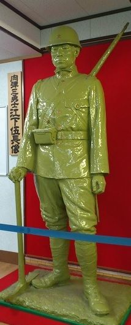
江下武二伍長の出身地は、佐賀県神埼郡蓮池村（佐賀市蓮池町）。
「肉弾三勇士」は日本陸軍独立工兵第十八大隊の、江下武二、北川丞、作江伊之助、各一等兵三名のことをさす。
昭和七年一月の上海事変の際、中国国民革命軍が上海郊外に築いた鉄条網に対し、三名は突撃路を拓くため、点火した破壊筒を持って敵陣に突入爆破。三名は爆死した。
破壊筒とは、爆薬の入った筒であり、地雷原や鉄条網など、障害の除去に用いられる工兵部隊の装備品である。現代でも使われており「破壊筒、前へ」という号令は、施設科隊員ならおなじみのものだろう。
銅像は、昭和九年に県民の寄付で、故郷の蓮池公園に建立された。太平洋戦争の戦局悪化にともない、昭和十七年頃に金属回収され、現在は、台座を残すのみとなっている。
原型の石膏像は一部破損していたものの、九州補給処の倉庫に保管されており、佐賀市在住の美術家、舟一朝氏と塗装業、宮嵜香氏の協力を得て修復した、とのこと。
銅像の原型は、オリジナルのクオリティーを高める意味からも、銅像鋳造後に複製されないよう破棄されるのが通例となっている。原型の石膏像が七〇年以上の年月を経て残っているのは希有といえる。
古賀一曹によれば、地元の見学者は、まず資料館に入るとすぐに江上伍長に手を合わせるのだそうだ。
当地は大東亜戦争時には大刀洗陸軍飛行学校目達原分校(飛行場)として使用され、特攻機の出撃地(中継地)でもあった。
ために陸軍特攻隊の遺品等が数多く展示されている。
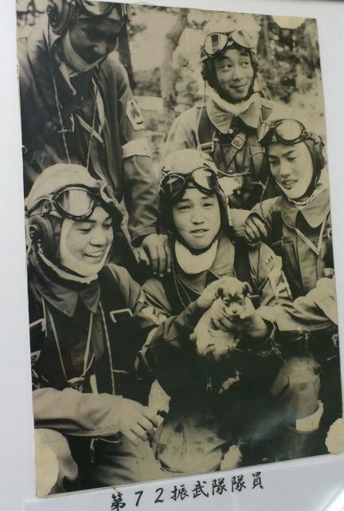
画像は「子犬を抱いた少年兵」
この写真は昭和二〇年五月二十六日の午後(出撃の前日)に撮影されている。
場所は鹿児島県万世特攻基地で、写っている五名は、第七二振武隊の隊員となる。
写真を撮ったのは朝日新聞のカメラマンの稲村氏。
右上は、高橋峯好少尉、十七歳(神奈川県)。
右下が、千田孝正少尉、十八歳(愛知県)。
左上が、高橋要少尉、十八歳(東京都)。
左下が、早川努少尉、十八歳(三重県)。
中央で子犬を抱えているのが、荒木幸雄少尉、十七歳(群馬県)。
当時の階級は伍長だが、戦死により二階級特進で少尉に昇進している。伍長と紹介される場合が多いが、最終的な階級を表記した。
古賀一曹の説明によれば(見聞と思われる)、撮影当時、あまり良い雰囲気ではなかったが、どこからか子犬がやってきて、荒木少尉が抱いた途端、皆が笑顔になったそうだ。その瞬間を捉えたのが前述のスナップショットである。
彼らは十七～十八歳の、今でいうと高校生にあたる。
彼らはごく普通の若者であった、と評する向きがあるが私は決してそうは思わない。
軍国主義に洗脳された、狂信的な若者だった――とも思わない。
彼らは、厳しい難関をくぐり抜けて陸軍少年飛行兵となった、選良中の選良である。これからの日本国を牽引していくべき優秀な人材であった。
訓練とは本来、生き残るために行うものだ。
神風特別攻撃隊の提唱者は、大西瀧治郎海軍中将である。その大西瀧治郎海軍中将でさえ特攻をして「統率の外道」と語ったといわれる。
大西瀧治郎中将は、終戦後、自決した。「特攻隊の英霊に曰す」と始まる遺書は、自らの死を以て旧部下の英霊とその遺族に謝す、とし、また一般国民に対し軽挙妄動を慎み、日本の復興、発展に尽くすように、との内容であった。
彼らはカメラの前で笑顔を見せている。
しかし、荒木少尉の手に抱かれている子犬だけは悲しげである。まるで荒木少尉たちの運命を悟っているかのように。
特攻は作戦としては良策とはいえない。だが、それによって命を落とした特攻隊員たちは国の英雄である。
十七時となり、夕食を食べるために隊員食堂へと赴く。詳細は割愛する。
初日が終わった。また明日の昼前に警衛所前で後藤一尉と落ち合う約束となり、駐屯地をあとにした。
二日目は、昨日と打って変わった猛暑日。ホテルを出、歩いて駐屯地に向かうが、すぐに汗ばんできた。
警衛所に到着し、「取材の件でお伺いしました」と伝えると、「廣川さんですね」と確認される。恐らく申し送り事項があるのだろう。初日よりもずいぶんとスムーズに進んだ。
後藤一尉とともに、隊員食堂に向かう。
食事のあとは売店を見学させていただいた。売店の入っている建物の中にはコンビニのほか、喫茶店、営外勤務者用の食堂、図書室、スポーツ用品店、本屋、談話室などがある。建物の近くには、理髪店や隊内クラブも存在する。
かつては売店は直営で、品物の値段は若干、民間の店とくらべると安かったが、現在は民間委託となり、値段はコンビニと同レベルとなっている。土日も営業しているとのこと。直営売店の頃は土日は休みだったから、その点は利便性が増したといえよう。
お弁当などのチルド製品も販売されているのは驚きだった。営外勤務者用のものだろう。
尿意をもよおし、厚生センターの奥にあるトイレへと向かった。小便器の上には、平成二五年度春の駐屯地交通安全標語優秀作品の張り紙が飾られてあった。
「事故招く モラルの欠如と 多忙感」大和二曹
「忘れるな ルールにベルト ヘルメット」長門一曹
「携帯に 夢中で見逃す『赤』や『人』」霧島一曹
などの標語が並んでおり、自衛隊ならではの光景といえる。
手を洗い、洗面所を出る。
廊下の曲がり角で、二人組の迷彩服姿の自衛官とぶつかりそうになった。二人はすかさず私に向かって挙手の敬礼をした。「お疲れ様です！」
とっさに十度の敬礼を返す。十度の敬礼は、無帽の時に行う敬礼で、簡単にいうならお辞儀のようなものである。
警察や消防については浅学のために不明だが、自衛隊は帽子をかぶっていない時は挙手の敬礼は行わない。挙手の敬礼とは、映画やドラマなどでよくある、右手を差し伸ばし、右目の上に掲げる敬礼だ。
室内では帽子は脱ぐので、室内での敬礼(部隊長に着任の挨拶などをする際)は、十度の敬礼となる。
敬礼は明治初期、帝国陸海軍創設時に、欧州の軍隊に準じて導入されたもので、現在の自衛隊にも継承されている。
敬礼は、自衛隊法施行規則、第二章 礼式（第十条―第十五条の二）によって定められ、自衛隊の規律を維持し、親和協同の実をあげ、及び必要な儀礼を行うことを目的とする、とある。
敬礼は各個の敬礼、隊の敬礼、歩哨等の敬礼など、その種類は多岐にわたる。銃を携行している場合や、帽子の有無などで敬礼のやり方は異なる。最もポピュラーなものはやはり、自衛官一人が個人として行う各個の敬礼だろう。前期教育では基本教練として敬礼動作などはみっちりとたたき込まれる。
敬礼の由来だが、元々は鎧を装着した騎士が自らの顔を貴族や王族に見せる際、兜の眉庇を持ち上げる動作から始まった、とされている。
自衛隊では手のひらを下に向けた敬礼だが、フランスやイギリスでは、手のひらを見せる敬礼をする。また、無帽時における十度の敬礼は日本独特であり、海外では無帽でも挙手の敬礼をする。
私はスーツを着用していて明らかに自衛官には見えないはずだが敬礼された。私に敬礼をしたのは、入隊したばかりの新隊員だった。新隊員にとっては理論上、同期生以外の人間は先輩にあたるので、とっさに敬礼をしてしまったのだろう。とはいってもスーツを着ているから民間人とは限らない。地方協力本部の自衛官は、スーツを着用する場合もある。
ちなみに、左利きの人間は、ついうっかり左腕で敬礼する場合もある。
もしくは、可能性は低いが、取材で部外者が訪れるので一層言動には慎むように、というような通達があって、緊張していたのかもしれない。
余談だが、取材のお願いで目達原駐屯地を訪れた際、私は警衛所で面会の手続きを済ませたあと、警衛所の中央まで歩いて左向け左をしてかかとを揃え、警衛所の中にいた警衛司令に向かって十度の敬礼をした。警衛司令はさっと挙手の敬礼を返した。
さておき。
午後の予定は、喫茶部のオーナーのかたのインタビューである。しかしオーナーは業者と打ち合わせ中で、すぐには無理とのこと。厚生センターの談話室で待機する段取りとなった。
同行してくれた後藤一尉に前々から疑問に思っていた点を尋ねた。
「いまの自衛官って、ＳＮＳは禁止されているんですか？」
「いえ、禁止はされていません。けどインターネット関連のサービスを使う際は届け出が必要ですね。昔は私物のパソコンもありましたが、今はもう全て官品(支給品)で、私物はパソコンも含めてタブレットも持ち込めないようになってます。情報保全が厳しいですから」
「いわゆる赤本とか青本とかあるじゃないですか。(前期教育で使用される教範)たとえば自分が買えますかね。資料としてあったら便利かなと思って」
「教範は一般のかたは買えないですね。自分が買う場合も、いろいろと書類に記入しなくてはならないぐらいです。今は厳しいですよ」
やがて業者との打ち合わせが終わってオーナーが姿を見せた。喫茶部の店内で人気メニューなどの話を聞かせていただいた。
二品ほど実際に作っていただいたが、隊員食堂の料理と比べると「華がある」と感じた。詳細は割愛する。
隊員食堂にて夕飯を済ませ、二日目が終了した。
最終日を迎えた。例のごとく後藤一尉と警衛所で落ち合って隊員食堂へと向かう。
午後からは、隊員食堂の糧食班長、及び栄養士のかたに色々と話を聞かせていただいた。
喫茶部の取材でも感じたが、広報班長の後藤一尉が同行してくれたおかげで、下へも置かぬ扱いで恐縮しきりだった。
目達原駐屯地は入口の警衛所近くに、７４式戦車と６１式戦車が展示してある。最後にその写真を撮りたいと後藤一尉に申し出ると「一緒に行きましょう」ということになった。
ちょうど戦闘服姿のワック(婦人自衛官)が通りかかった。肩に、銃剣付きの小銃を提げている。ワックが後藤一尉に敬礼する。後藤一尉は答礼した。すれ違い、私は振り返って小銃を確認した。
「あれは、６４ですよね？」
まさかまだ６４式小銃が現役だとは思わなかった。
「そうですね。６４です。後方職種はまだ更新が終わってないですね」
普通科などの戦闘職種はすでに８９式小銃に切り替わっている、とのこと。
６４式小銃は一九六四年に正式採用された戦後初の国産小銃である。開発、製造は豊和工業が担当し、自衛隊と海上保安庁で採用された。アサルトライフルに分類される。
弾倉は複列式で、最大装填数は二〇発。単発、連発と切り替えが出来る。検定射撃の際は単発で撃つ。残弾処理の場合は連発だが、連発だとほんの一瞬で弾倉は空になる。
二十三万丁以上が製造された。陸上自衛隊では後方職種、海上自衛隊、航空自衛隊では未だ現役となっている。
自衛官にとって小銃は道具の一つであり、なんら特別なものではない。だが、殺傷力をもつため、普段の保管には細心の注意が払われている。
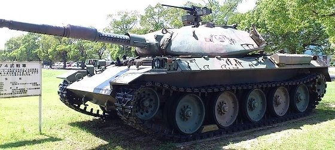
七四式戦車。
７４式戦車は６１式戦車の後継で、第二世代の主力戦車に分類される。
開発は三菱重工が担当した。
１０５ｍｍライフル砲を装備し、油気圧サスペンションによって車体を傾けることが可能。
上部に銃座がありブローニングＭ２重機関銃が据え付けられている。
展示品のため、機関銃の主要な部品は抜いてあると思われる。
水密構造のため、潜水キットを取り付ければ二メートル強の潜水渡河が可能となっている。
化学兵器などで汚染された地域では、車内を与圧し、乗員を汚染物質から防護することもできる。
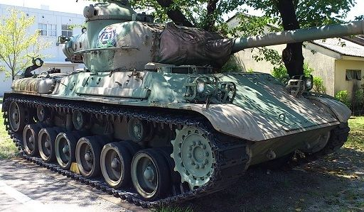
こちらは６１式戦車。
第二次世界大戦後、初めて開発された国産戦車である。
第一世代の主力戦車に分類される。
開発と生産は三菱重工業が担当。
９０ｍｍライフル砲を装備。
鉄道輸送を考慮し、車体が小型化されている。
五六〇輛が生産された。現在は全車退役。
後藤一尉曰く、見学者にどちらの戦車が新しいと思うかと尋ねると、６１式戦車に軍配があがるという。
見た目的には、確かに６１式のほうが戦車らしさはあるかもしれない。
７４式戦車と比べると車高が高い。
こうして三日間の取材が終わった。
忌川タツヤ氏に、取材を終えましたとのメールを送ったところ、次のような返事をいただいた。
「おつかれさまでした。食べ物の描写も読みたいですが、駐屯地に現れた変わり者の自衛隊ＯＢに対する現役隊員たちの反応も読みたいかも」
実は駐屯地の中は、部外者の姿は珍しくはない。売店などは民間経営なので、働いているのも民間人である。工事関係の業者の人間も多い。
だから部外者が紛れ込んだとしても、現役の隊員たちは何も思わないだろう。もちろん、たとえば車両班、もしくは機材庫など、通常、一般人が立ち入らない場所にぽつんと一人だけ私服姿の者がいれば目立つのは間違いない。
少なくとも厚生センターなどの建物近辺では、民間人がいても、取り立てて奇異ではないし、基本的には無視される。
三日間の喫食体験は、非常に有意義なものだった。
私が自衛隊に在籍していた頃とは変化している点もあったが、駐屯地の中に漂う空気だけは変わっていなかった。
『目達原駐屯地取材体験記』おわり
久しぶりに陸上自衛隊の駐屯地の空気に触れて、思い出した点があった。
普通科連隊(歩兵)の所在する駐屯地は雰囲気が異なる。
取材させていただいた目達原駐屯地は補給や整備関係、それから航空科なので普通科部隊は存在しない。
北部九州で普通科のある駐屯地は、福岡、別府、小倉、大村、少し特殊なところで相浦だろうか。
上記の駐屯地は、他と比べるとピリピリした空気が漂っている気がする。
取材に同行してくださった広報班長の後藤一尉にそれを言ったところ、
「普通科は戦闘職種ですからね。そういうこともあるかもしれませんね。言われてみればそんな感じがしますね」とのことだった。
民間の人から見たら、それほど違いは分からないかもしれない。
自衛隊は特殊で、民間とは違う点が多々あるがその最もたるものは「規律」であると思う。もちろん自衛官も普通の日本人で、その意味では民族固有の美点も欠点も備えている。
自衛隊は、創設以来、実際の戦闘を一度も経験していない。有事の際に役に立つのか、という疑問の声が存在するのも確かである。
いざ有事が発生した場合、自衛官のほとんどは職務に忠実であると思う。
私は寡聞にして「演習がキツイからサボる」という自衛官は聞いた覚えがない。
有事も一緒である。
いったん命令が下れば、断固としてそれを遂行するのが自衛隊という組織だ。
最後に。
突然、約束もなしにお邪魔して「自衛隊を取材させてくれ」なんて変なお願いを駐屯地の広報室に通してくれた佐賀の地方協力本部のセンター長である北原三佐、ありがとうございました。
私の、酔狂とも思える希望を真摯にきいてくださった駐屯地広報室長の加茂三佐、ありがとうございました。
取材に同行してくださった広報班長の後藤一尉、ありがとうございました。ユーモアのあるかただと思います。
そして、最終的に許可をしてくださった駐屯地司令の川﨑朗陸将補、まことにありがとうございました。足を向けては眠れません。
表紙は、デザイナーのクリエイティブボックス様に作成していただきました。大変素晴らしい出来映えでもったいない限りです。ありがとうございました。
厚生センターの喫茶部のオーナーである杉山様、お忙しいところ時間をつくっていただきありがとうございました。
広報資料館の館長である古賀一曹、お話を聞かせていただいた糧食班長の日向二尉、山城技官、それから糧食班の料理長、及び隊員の皆様、ありがとうございました。
目達原駐屯地のごはんはとても美味しかったです。
※人名に関しては一部、仮名です。
廣川ヒロト拝
免責
本書は取材を元に執筆されていますが、内容につきましては事実を保障するものではありません。
著者プロフィール
廣川ヒロト
一九七四年生まれ。
双子座。
福岡市出身、福岡県在住。元自衛官。
代表作『自衛隊のごはん』シリーズ
奥付
著者 廣川ヒロト
出版 電明書房
表紙 クリエイティブボックス
取材協力 陸上自衛隊 目達原駐屯地広報室、および九州補給処総務部管理課糧食班
平成二五年十月一日 初版
平成二六年三月二〇日 二版
(C)2013 Printed in Japan